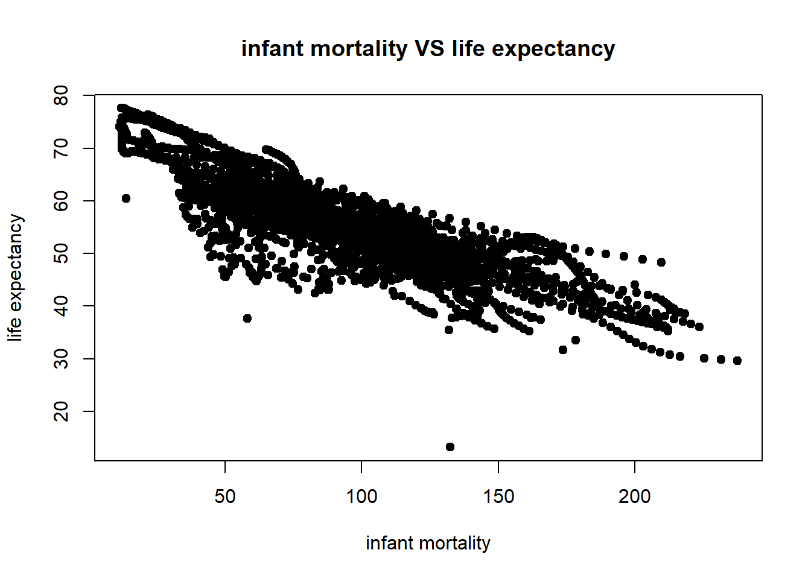
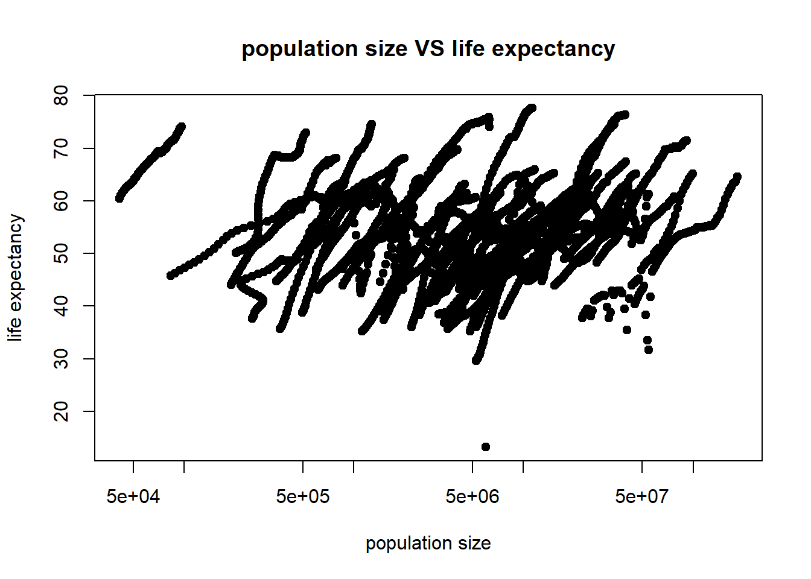
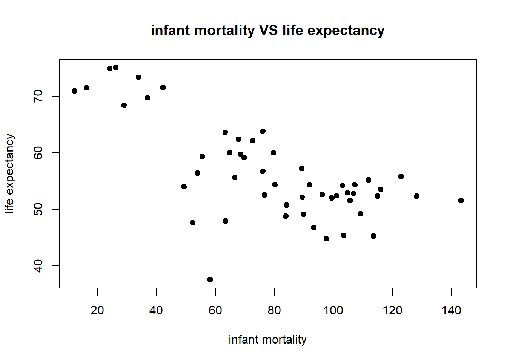
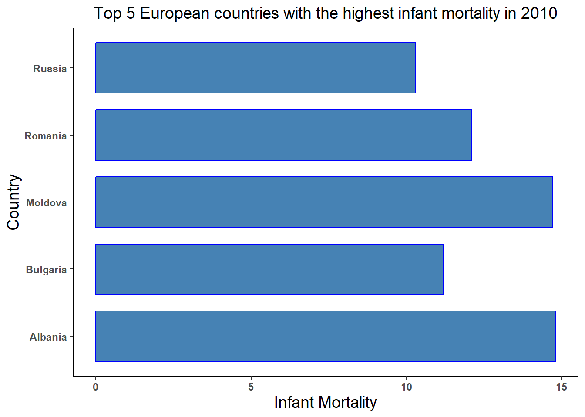
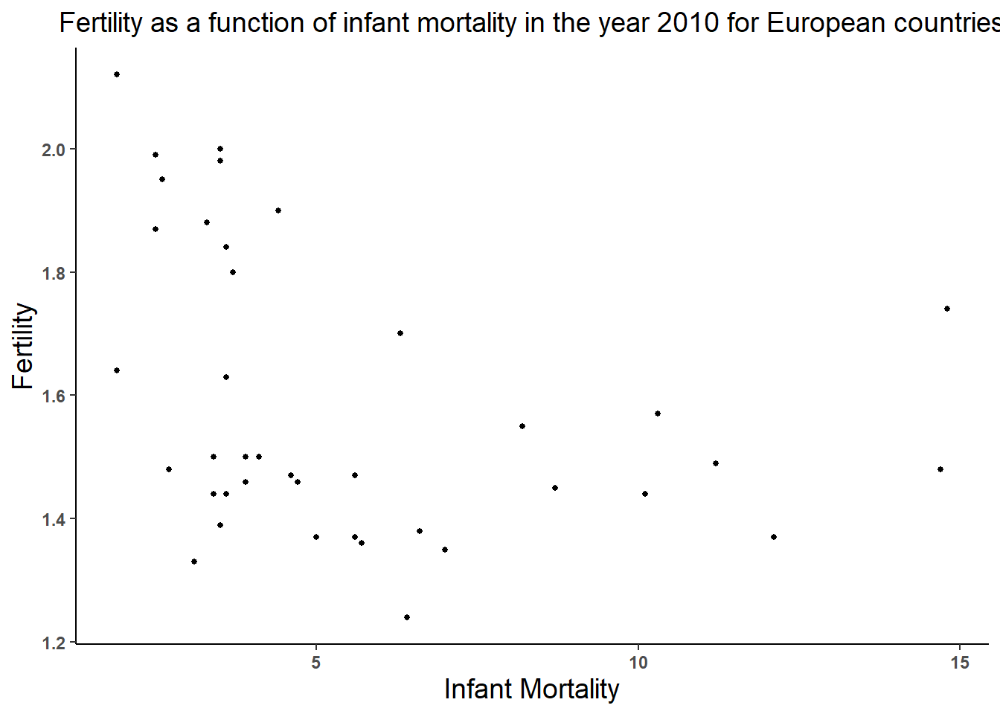
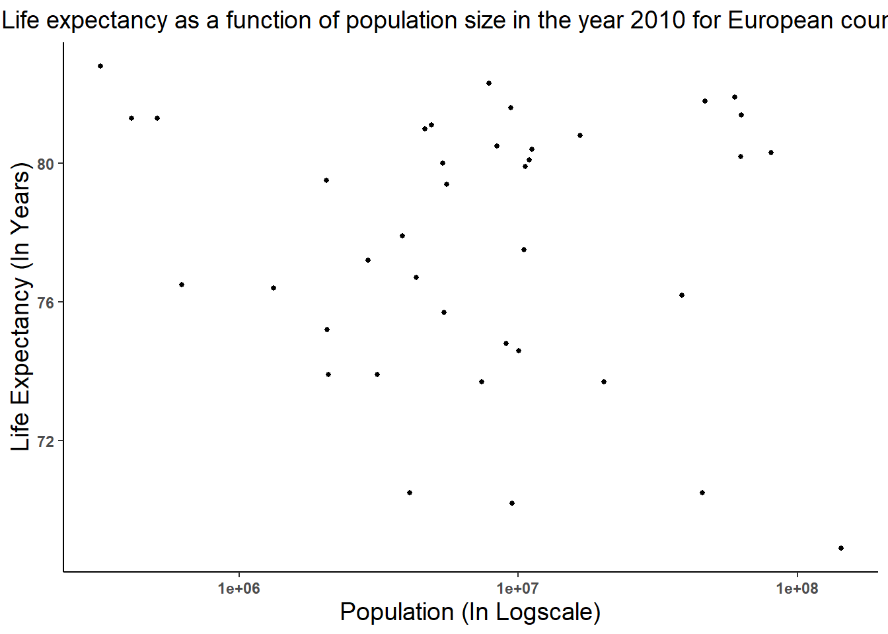

── Attaching core tidyverse packages ──────────────────────── tidyverse 2.0.0 ──
✔ dplyr 1.1.1 ✔ readr 2.1.4
✔ forcats 1.0.0 ✔ stringr 1.5.0
✔ ggplot2 3.4.1 ✔ tibble 3.2.1
✔ lubridate 1.9.2 ✔ tidyr 1.3.0
✔ purrr 1.0.1
── Conflicts ────────────────────────────────────────── tidyverse_conflicts() ──
✖ dplyr::filter() masks stats::filter()
✖ dplyr::lag() masks stats::lag()
ℹ Use the conflicted package (<http://conflicted.r-lib.org/>) to force all conflicts to become errors
#look at help file for gapminder datahelp(gapminder)
starting httpd help server ... done
#get an overview of data structurestr(gapminder)
'data.frame': 10545 obs. of 9 variables:
$ country : Factor w/ 185 levels "Albania","Algeria",..: 1 2 3 4 5 6 7 8 9 10 ...
$ year : int 1960 1960 1960 1960 1960 1960 1960 1960 1960 1960 ...
$ infant_mortality: num 115.4 148.2 208 NA 59.9 ...
$ life_expectancy : num 62.9 47.5 36 63 65.4 ...
$ fertility : num 6.19 7.65 7.32 4.43 3.11 4.55 4.82 3.45 2.7 5.57 ...
$ population : num 1636054 11124892 5270844 54681 20619075 ...
$ gdp : num NA 1.38e+10 NA NA 1.08e+11 ...
$ continent : Factor w/ 5 levels "Africa","Americas",..: 4 1 1 2 2 3 2 5 4 3 ...
$ region : Factor w/ 22 levels "Australia and New Zealand",..: 19 11 10 2 15 21 2 1 22 21 ...
#get a summary of datasummary(gapminder)
country year infant_mortality life_expectancy
Albania : 57 Min. :1960 Min. : 1.50 Min. :13.20
Algeria : 57 1st Qu.:1974 1st Qu.: 16.00 1st Qu.:57.50
Angola : 57 Median :1988 Median : 41.50 Median :67.54
Antigua and Barbuda: 57 Mean :1988 Mean : 55.31 Mean :64.81
Argentina : 57 3rd Qu.:2002 3rd Qu.: 85.10 3rd Qu.:73.00
Armenia : 57 Max. :2016 Max. :276.90 Max. :83.90
(Other) :10203 NA's :1453
fertility population gdp continent
Min. :0.840 Min. :3.124e+04 Min. :4.040e+07 Africa :2907
1st Qu.:2.200 1st Qu.:1.333e+06 1st Qu.:1.846e+09 Americas:2052
Median :3.750 Median :5.009e+06 Median :7.794e+09 Asia :2679
Mean :4.084 Mean :2.701e+07 Mean :1.480e+11 Europe :2223
3rd Qu.:6.000 3rd Qu.:1.523e+07 3rd Qu.:5.540e+10 Oceania : 684
Max. :9.220 Max. :1.376e+09 Max. :1.174e+13
NA's :187 NA's :185 NA's :2972
region
Western Asia :1026
Eastern Africa : 912
Western Africa : 912
Caribbean : 741
South America : 684
Southern Europe: 684
(Other) :5586
#determine the type of object gapminder isclass(gapminder)
[1] "data.frame"
#select only africaafricadata <- gapminder[which(gapminder$continent=='Africa'),]#get an overview of data structurestr(africadata)
'data.frame': 2907 obs. of 9 variables:
$ country : Factor w/ 185 levels "Albania","Algeria",..: 2 3 18 22 26 27 29 31 32 33 ...
$ year : int 1960 1960 1960 1960 1960 1960 1960 1960 1960 1960 ...
$ infant_mortality: num 148 208 187 116 161 ...
$ life_expectancy : num 47.5 36 38.3 50.3 35.2 ...
$ fertility : num 7.65 7.32 6.28 6.62 6.29 6.95 5.65 6.89 5.84 6.25 ...
$ population : num 11124892 5270844 2431620 524029 4829291 ...
$ gdp : num 1.38e+10 NA 6.22e+08 1.24e+08 5.97e+08 ...
$ continent : Factor w/ 5 levels "Africa","Americas",..: 1 1 1 1 1 1 1 1 1 1 ...
$ region : Factor w/ 22 levels "Australia and New Zealand",..: 11 10 20 17 20 5 10 20 10 10 ...
#get a summary of datasummary(africadata)
country year infant_mortality life_expectancy
Algeria : 57 Min. :1960 Min. : 11.40 Min. :13.20
Angola : 57 1st Qu.:1974 1st Qu.: 62.20 1st Qu.:48.23
Benin : 57 Median :1988 Median : 93.40 Median :53.98
Botswana : 57 Mean :1988 Mean : 95.12 Mean :54.38
Burkina Faso: 57 3rd Qu.:2002 3rd Qu.:124.70 3rd Qu.:60.10
Burundi : 57 Max. :2016 Max. :237.40 Max. :77.60
(Other) :2565 NA's :226
fertility population gdp continent
Min. :1.500 Min. : 41538 Min. :4.659e+07 Africa :2907
1st Qu.:5.160 1st Qu.: 1605232 1st Qu.:8.373e+08 Americas: 0
Median :6.160 Median : 5570982 Median :2.448e+09 Asia : 0
Mean :5.851 Mean : 12235961 Mean :9.346e+09 Europe : 0
3rd Qu.:6.860 3rd Qu.: 13888152 3rd Qu.:6.552e+09 Oceania : 0
Max. :8.450 Max. :182201962 Max. :1.935e+11
NA's :51 NA's :51 NA's :637
region
Eastern Africa :912
Western Africa :912
Middle Africa :456
Northern Africa :342
Southern Africa :285
Australia and New Zealand: 0
(Other) : 0
#infant_mortality and life_expectancymoex <- africadata %>%select(c('infant_mortality','life_expectancy'))#population and life_expectancypoex <- africadata %>%select(c('population','life_expectancy'))#get an overview of data structurestr(moex)
'data.frame': 2907 obs. of 2 variables:
$ infant_mortality: num 148 208 187 116 161 ...
$ life_expectancy : num 47.5 36 38.3 50.3 35.2 ...
str(poex)
'data.frame': 2907 obs. of 2 variables:
$ population : num 11124892 5270844 2431620 524029 4829291 ...
$ life_expectancy: num 47.5 36 38.3 50.3 35.2 ...
#get a summary of datasummary(moex)
infant_mortality life_expectancy
Min. : 11.40 Min. :13.20
1st Qu.: 62.20 1st Qu.:48.23
Median : 93.40 Median :53.98
Mean : 95.12 Mean :54.38
3rd Qu.:124.70 3rd Qu.:60.10
Max. :237.40 Max. :77.60
NA's :226
summary(poex)
population life_expectancy
Min. : 41538 Min. :13.20
1st Qu.: 1605232 1st Qu.:48.23
Median : 5570982 Median :53.98
Mean : 12235961 Mean :54.38
3rd Qu.: 13888152 3rd Qu.:60.10
Max. :182201962 Max. :77.60
NA's :51
#scatter plot infant mortality VS life expectancyplot(moex$infant_mortality,moex$life_expectancy, main="infant mortality VS life expectancy", xlab="infant mortality", ylab="life expectancy", pch=19)

#scatter plot population size VS life expectancyplot(poex$population,poex$life_expectancy, main="population size VS life expectancy", xlab="population size", ylab="life expectancy", pch=19,log='x')

#the year which infant_mortality is NAnamor <-africadata$year[which(is.na(africadata$infant_mortality))]table(namor)
'data.frame': 51 obs. of 9 variables:
$ country : Factor w/ 185 levels "Albania","Algeria",..: 2 3 18 22 26 27 29 31 32 33 ...
$ year : int 2000 2000 2000 2000 2000 2000 2000 2000 2000 2000 ...
$ infant_mortality: num 33.9 128.3 89.3 52.4 96.2 ...
$ life_expectancy : num 73.3 52.3 57.2 47.6 52.6 46.7 54.3 68.4 45.3 51.5 ...
$ fertility : num 2.51 6.84 5.98 3.41 6.59 7.06 5.62 3.7 5.45 7.35 ...
$ population : num 31183658 15058638 6949366 1736579 11607944 ...
$ gdp : num 5.48e+10 9.13e+09 2.25e+09 5.63e+09 2.61e+09 ...
$ continent : Factor w/ 5 levels "Africa","Americas",..: 1 1 1 1 1 1 1 1 1 1 ...
$ region : Factor w/ 22 levels "Australia and New Zealand",..: 11 10 20 17 20 5 10 20 10 10 ...
summary(afri2000)
country year infant_mortality life_expectancy
Algeria : 1 Min. :2000 Min. : 12.30 Min. :37.60
Angola : 1 1st Qu.:2000 1st Qu.: 60.80 1st Qu.:51.75
Benin : 1 Median :2000 Median : 80.30 Median :54.30
Botswana : 1 Mean :2000 Mean : 78.93 Mean :56.36
Burkina Faso: 1 3rd Qu.:2000 3rd Qu.:103.30 3rd Qu.:60.00
Burundi : 1 Max. :2000 Max. :143.30 Max. :75.00
(Other) :45
fertility population gdp continent
Min. :1.990 Min. : 81154 Min. :2.019e+08 Africa :51
1st Qu.:4.150 1st Qu.: 2304687 1st Qu.:1.274e+09 Americas: 0
Median :5.550 Median : 8799165 Median :3.238e+09 Asia : 0
Mean :5.156 Mean : 15659800 Mean :1.155e+10 Europe : 0
3rd Qu.:5.960 3rd Qu.: 17391242 3rd Qu.:8.654e+09 Oceania : 0
Max. :7.730 Max. :122876723 Max. :1.329e+11
region
Eastern Africa :16
Western Africa :16
Middle Africa : 8
Northern Africa : 6
Southern Africa : 5
Australia and New Zealand: 0
(Other) : 0
#plot plot(afri2000$infant_mortality,afri2000$life_expectancy, main="infant mortality VS life expectancy", xlab="infant mortality", ylab="life expectancy", pch=19)

#plotplot(afri2000$population,afri2000$life_expectancy, main="population size VS life expectancy", xlab="population size", ylab="life expectancy", pch=19,log='x')
Call:
lm(formula = life_expectancy ~ population, data = afri2000)
Residuals:
Min 1Q Median 3Q Max
-18.429 -4.602 -2.568 3.800 18.802
Coefficients:
Estimate Std. Error t value Pr(>|t|)
(Intercept) 5.593e+01 1.468e+00 38.097 <2e-16 ***
population 2.756e-08 5.459e-08 0.505 0.616
---
Signif. codes: 0 '***' 0.001 '**' 0.01 '*' 0.05 '.' 0.1 ' ' 1
Residual standard error: 8.524 on 49 degrees of freedom
Multiple R-squared: 0.005176, Adjusted R-squared: -0.01513
F-statistic: 0.2549 on 1 and 49 DF, p-value: 0.6159
Here we know infant mortality has statistically significant negative relationship with life-expectancy. But we don’t have enough statistical evidence about the relationship between population and life expectancy.
————————————————————————————————————————–
THIS SECTION ADDED BY SHIWANI SAPKOTA
I am interested on looking at infant mortality, life expectancy, fertility, and population variables for European countries in the year 2010 using gapminder data.
DATA PROCESSING
# Creating an object europedata containing only the European countrieseuropedata <- gapminder %>%filter(continent =="Europe")# Looking at the structure and summary of object (europedata)str(europedata)
'data.frame': 2223 obs. of 9 variables:
$ country : Factor w/ 185 levels "Albania","Algeria",..: 1 9 15 16 21 25 42 45 46 54 ...
$ year : int 1960 1960 1960 1960 1960 1960 1960 1960 1960 1960 ...
$ infant_mortality: num 115.4 37.3 NA 29.5 105 ...
$ life_expectancy : num 62.9 68.8 71.6 69.6 62.6 ...
$ fertility : num 6.19 2.7 2.74 2.6 4.05 2.25 2.33 2.3 2.54 1.95 ...
$ population : num 1636054 7065525 8190027 9140563 3214520 ...
$ gdp : num NA 5.24e+10 NA 6.82e+10 NA ...
$ continent : Factor w/ 5 levels "Africa","Americas",..: 4 4 4 4 4 4 4 4 4 4 ...
$ region : Factor w/ 22 levels "Australia and New Zealand",..: 19 22 7 22 19 7 19 7 13 13 ...
summary(europedata)
country year infant_mortality life_expectancy
Albania : 57 Min. :1960 Min. : 1.50 Min. :60.85
Austria : 57 1st Qu.:1974 1st Qu.: 5.80 1st Qu.:70.49
Belarus : 57 Median :1988 Median : 11.25 Median :73.11
Belgium : 57 Mean :1988 Mean : 15.33 Mean :73.56
Bosnia and Herzegovina: 57 3rd Qu.:2002 3rd Qu.: 19.50 3rd Qu.:76.80
Bulgaria : 57 Max. :2016 Max. :120.00 Max. :83.30
(Other) :1881 NA's :305
fertility population gdp continent
Min. :1.130 Min. : 175520 Min. :6.277e+08 Africa : 0
1st Qu.:1.510 1st Qu.: 3261643 1st Qu.:1.278e+10 Americas: 0
Median :1.870 Median : 7614832 Median :7.388e+10 Asia : 0
Mean :1.968 Mean : 17891944 Mean :2.295e+11 Europe :2223
3rd Qu.:2.232 3rd Qu.: 13400360 3rd Qu.:2.167e+11 Oceania : 0
Max. :6.190 Max. :148435811 Max. :2.131e+12
NA's :39 NA's :39 NA's :789
region
Southern Europe :684
Eastern Europe :570
Northern Europe :570
Western Europe :399
Australia and New Zealand: 0
Caribbean : 0
(Other) : 0
# Looking at the years having missing data for infant mortality in europedatainfantmort_yrs_europe <- europedata %>%filter(is.na(infant_mortality))table(infantmort_yrs_europe$year)
# Creating a new object named europedata_2010 by using only year 2010 data from europedataeuropedata_2010 <- europedata %>%filter(year ==2010)# Looking at the structure and summary of object (europedata_2010)str(europedata_2010)
country year infant_mortality life_expectancy
Albania : 1 Min. :2010 Min. : 1.900 Min. :68.90
Austria : 1 1st Qu.:2010 1st Qu.: 3.450 1st Qu.:75.00
Belarus : 1 Median :2010 Median : 4.100 Median :79.40
Belgium : 1 Mean :2010 Mean : 5.544 Mean :77.73
Bosnia and Herzegovina: 1 3rd Qu.:2010 3rd Qu.: 6.500 3rd Qu.:80.90
Bulgaria : 1 Max. :2010 Max. :14.800 Max. :82.80
(Other) :33
fertility population gdp continent
Min. :1.240 Min. : 318042 Min. :1.405e+09 Africa : 0
1st Qu.:1.440 1st Qu.: 3479046 1st Qu.:1.437e+10 Americas: 0
Median :1.490 Median : 7830534 Median :5.653e+10 Asia : 0
Mean :1.587 Mean : 18843145 Mean :2.759e+11 Europe :39
3rd Qu.:1.770 3rd Qu.: 13904540 3rd Qu.:2.591e+11 Oceania : 0
Max. :2.120 Max. :143158099 Max. :2.069e+12
region
Southern Europe :12
Eastern Europe :10
Northern Europe :10
Western Europe : 7
Australia and New Zealand: 0
Caribbean : 0
(Other) : 0
# Looking at the top 5 European countries having highest infant mortality for the year 2010europe_infantmort <- europedata_2010 %>%select (country, infant_mortality) %>%arrange(desc(`infant_mortality`))europe2010_infantmort <-head(europe_infantmort, 5)europe2010_infantmort
country infant_mortality
1 Albania 14.8
2 Moldova 14.7
3 Romania 12.1
4 Bulgaria 11.2
5 Russia 10.3
# Looking at the top 5 European countries having highest life expectancy for the year 2010europe_lifeexpect <- europedata_2010 %>%select (country, life_expectancy) %>%arrange(desc(`life_expectancy`))europe2010_lifeexpect <-head(europe_lifeexpect, 5)europe2010_lifeexpect
country life_expectancy
1 Iceland 82.8
2 Switzerland 82.3
3 Italy 81.9
4 Spain 81.8
5 Sweden 81.6
# Looking at the top 5 European countries having largest population size for the year 2010europe_pop <- europedata_2010 %>%select (country, population) %>%arrange(desc(`population`))europe2010_pop <-head(europe_pop, 5)europe2010_pop
country population
1 Russia 143158099
2 Germany 80435307
3 France 62961136
4 United Kingdom 62716684
5 Italy 59588007
DATA VISUALIZATION
# Creating the object country to sort the 5 European countries having the highest infant mortality in the year 2010europe2010_infantmort <- europe2010_infantmort %>%mutate(country =as_factor(country),country <-fct_reorder(country, infant_mortality))# Plotting the horizontal barplot for visualizing top 5 European countries with the highest infant mortality in 2010ggplot(data = europe2010_infantmort, aes(x = country, y =`infant_mortality`)) +geom_bar(stat ="identity", width =0.75, color ="blue", fill ="steelblue") +coord_flip() +labs(title ="Top 5 European countries with the highest infant mortality in 2010",x ="Country", y ="Infant Mortality") +theme_classic() +theme(axis.text =element_text(face="bold"), plot.title =element_text(hjust =0.5, size =14),axis.title =element_text(size =14))

# Plotting fertility as a function of infant mortality in the year 2010 for European countriesggplot(data = europedata_2010, (aes(x = infant_mortality, y = fertility))) +theme_classic() +geom_point(size =1.0) +labs(title ="Fertility as a function of infant mortality in the year 2010 for European countries",x ="Infant Mortality", y ="Fertility") +theme(axis.text =element_text(face ="bold"), plot.title =element_text(hjust =0.5, size =14),axis.title =element_text(size =14))

# Plotting life expectancy as a function of population size in the year 2010 for European countriesggplot(data = europedata_2010, (aes(x = population, y = life_expectancy))) +theme_classic() +geom_point(size =1.0) +scale_x_continuous(trans ='log10') +labs(title ="Life expectancy as a function of population size in the year 2010 for European countries", x ="Population (In Logscale)", y ="Life Expectancy (In Years)") +theme(axis.text =element_text(face ="bold"), plot.title =element_text(hjust =0.5, size =14),axis.title =element_text(size =14))

FITTING MODEL
# Using lm function to fit linear regression model using fertility as the outcome and infant mortality as the predictor for the year 2010fit3 <-lm(fertility ~ infant_mortality, data = europedata_2010)# Tabulating the output fit3 from lm using broom packagebroom::tidy(fit3)
# Using lm function to fit linear regression model using life expectancy as the outcome and population size as the predictor for the year 2010fit4 <-lm(life_expectancy ~ population, data = europedata_2010)# Tabulating the output fit4 from lm using broom packagebroom::tidy(fit4)
# A tibble: 2 × 5
term estimate std.error statistic p.value
<chr> <dbl> <dbl> <dbl> <dbl>
1 (Intercept) 78.1 0.730 107. 1.05e-47
2 population -0.0000000203 0.0000000213 -0.956 3.45e- 1
CONCLUSION
Based on the p-values for each fit, we found somewhat statistically significant negative correlation between infant mortality and fertility in the year 2010 for European countries (p-value: 0.0429) while we found no statistically significant correlation between population size and life expectancy in the year 2010 for European countries (p-value: 0.345 ).